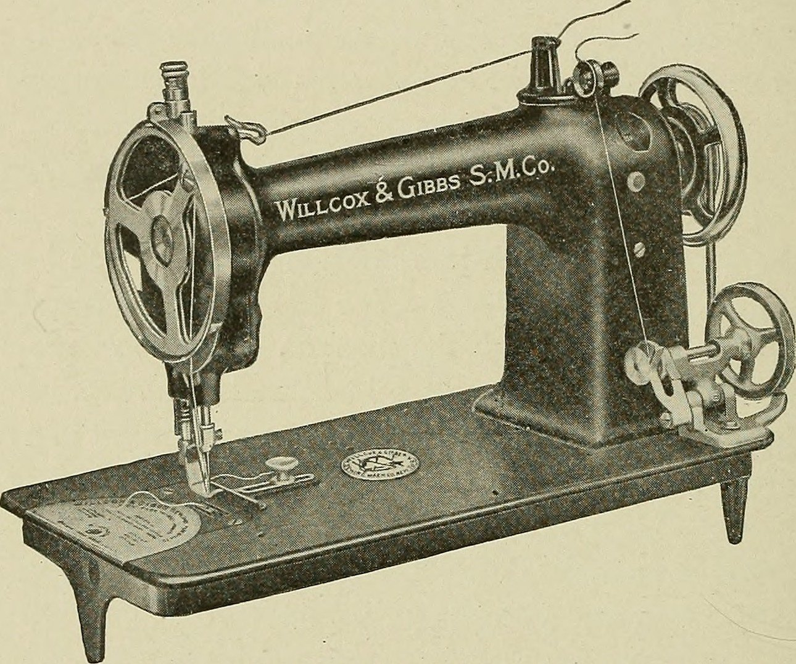
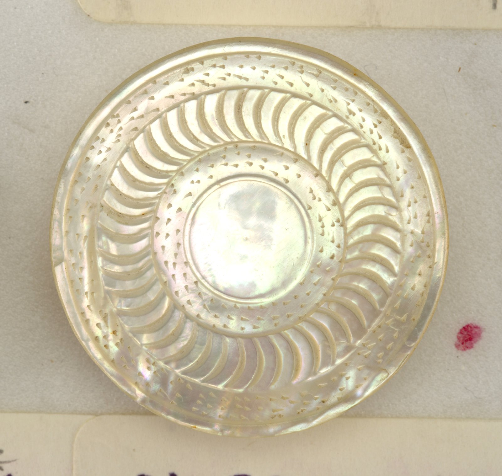
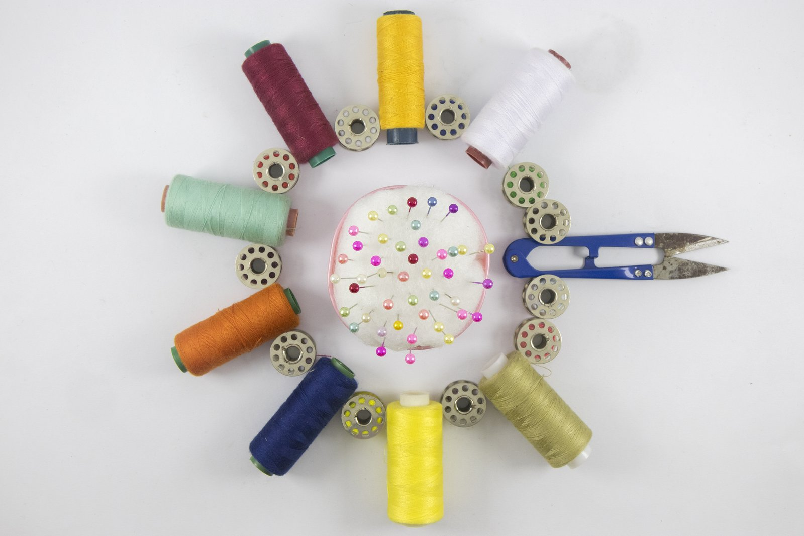
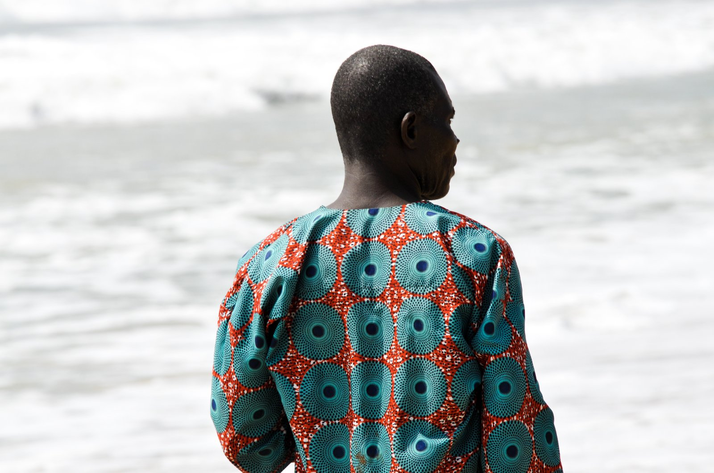
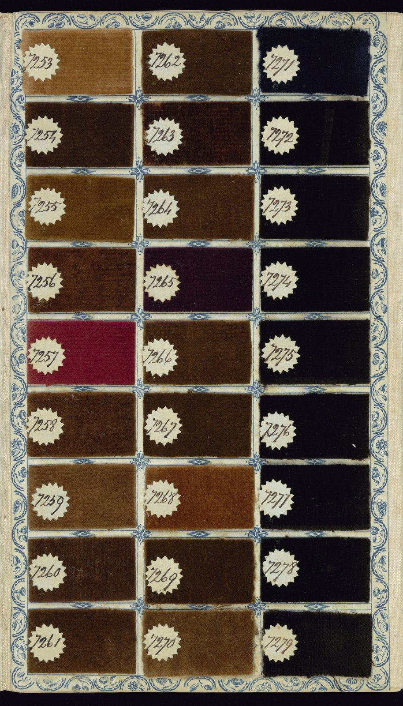
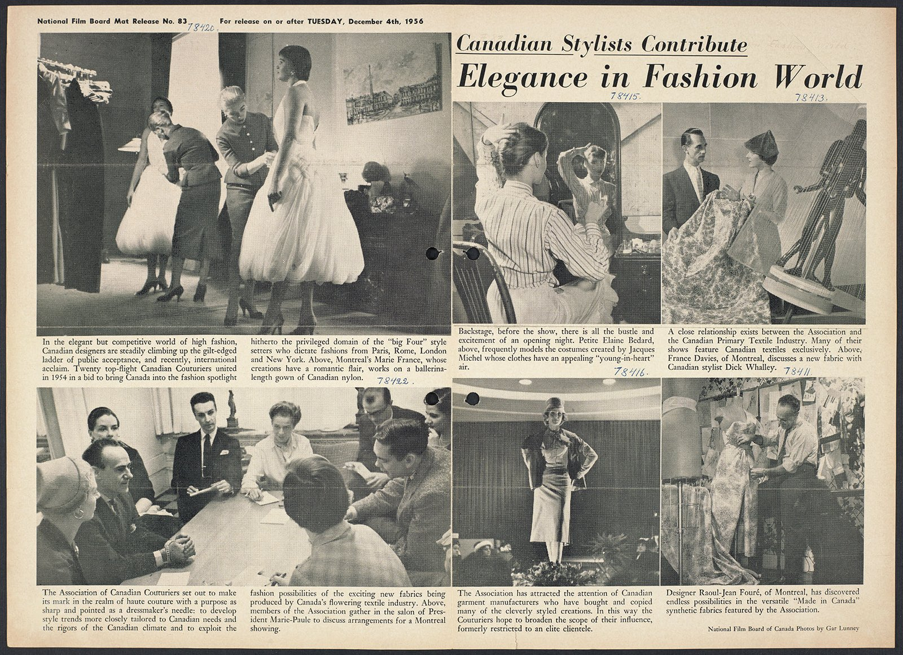

BESPOKE SARTORIAL COMMISSIONS
Individual bespoke allocations hand-tailored to anatomical client specifications with French seam construction and mother-of-pearl buttons.

The Grand Cambrai Dress Shirt
Tailored from 200s two-ply Giza cambric with split yoke, hand-turned French cuffs, and Australian mother-of-pearl buttons sewn on 2mm raised shanks.

Hand-Carved Pearl Button Sets
Thick 4mm Australian Pinctada maxima pearl buttons selected for high luminescence and hand-carved with sunken centers to protect stitching from dry-cleaning trauma.

Artisan Hand-Monogrammed Cuffs
Personalized heraldic or script monograms hand-embroidered onto left cuff or fifth shirt placket buttonhole using un-dyed French silk embroidery floss.

Bespoke Interlining Replacement
Custom-weighted unfused floating canvas collar interlinings engineered to your preferred stiffness: from soft casual Italian spread to razor-crisp diplomatic cutaway.

Botanical Mineral Dye Editions
Limited small-batch dyeing of cambric cloth in natural mineral shades: French oyster grey, unbleached flax ecru, and delicate woad-tinted twilight lavender.

Manhattan Salon Private Fitting
An intimate private sartorial appointment at our Mercer Street atelier. Review vintage cambric bolts, discuss neckband geometry, and execute toile fittings.